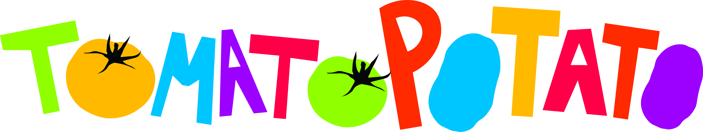
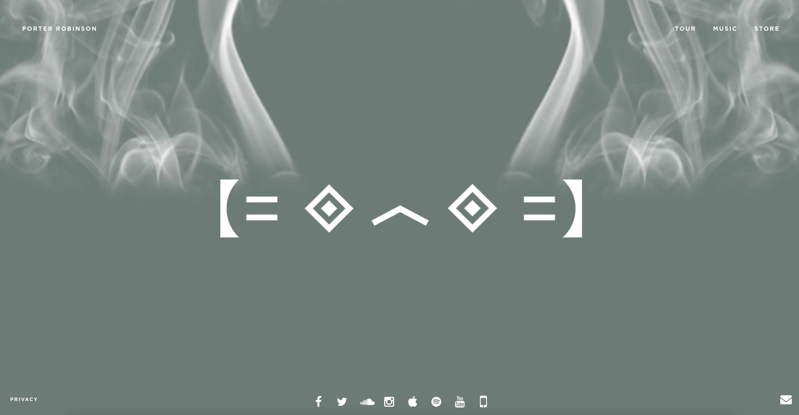
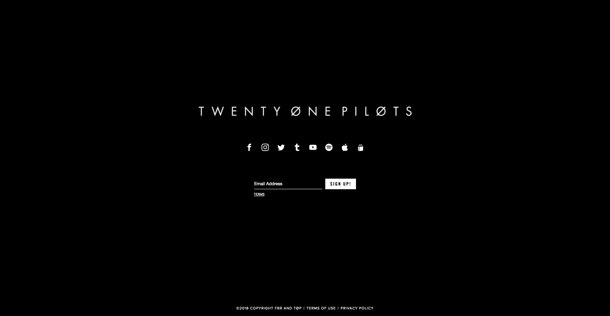
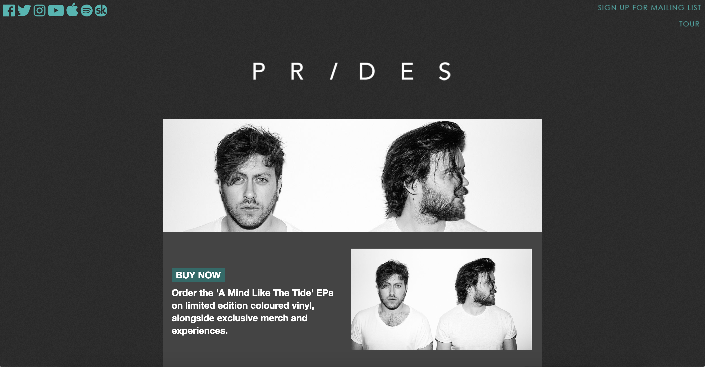
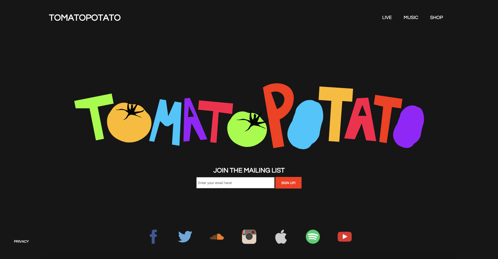

Custom single page website for Edinburgh pop band.
Click here to see the live demo! (Links disabled: NDA)
Utilising research from band websites, I created a one page minimalist website for the Edinburgh band TOMATOPOTATO.
The page is sparse in the use of elements, and nothing is there that doesn't need to be there. This was following some similar designs from bands in the same genre.
Market Research




This was a cool opportunity to focus on minimalist user interface design, aim for something that look cleaner and more professional, and a chance to develop more CSS skills and logo design/augmentation.
Here is a picture of the final project.
Final Project
